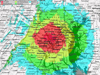
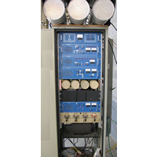

|
MARC operates three local amateur repeaters and two APRS digipeaters in the
Montgomery County area. These are "open" repeaters and are available
to any licensed ham. Our 2m [146 MHz] repeater's main transmitting and receiving
site is located in Rockville, MD with several remote sites providing
enhanced and extended coverage within the area.
The fully configured 146.955 repeater constellation consists of 5 sites
and contains 13 antennas!
Our 70cm [442 MHz], D-STAR [444 MHz] and 6m [53 MHz] repeaters operate as single-site repeaters from their respective sites. |
||
|

Our working radius is approximately 40 miles [64km] (terrain limited) providing 5,000 square miles [12,000 sq km] of coverage. The remote sites provide over 500 square miles of "sweet spot" [1,200 sq km] coverage where you are no further than 6 miles [10km] from one of our antennas. In these areas, HTs and low power operation are the norm. Click on the images to the left for more details. |
||
|

|
Following simple "Rules of the Road" for use of the repeaters will enhance their effectiveness in times of emergency and the pleasure it provides the users. Knowing the "Rules" will also help maintain the image our Club repeaters have earned as the "Washington Area's friendly repeaters".